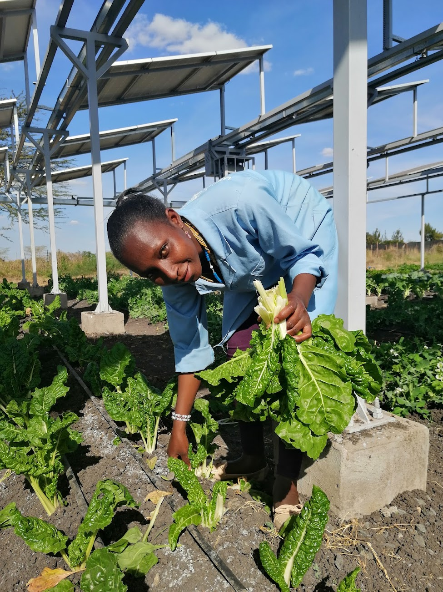

Semi-arid Lab for Scaling Agrivoltaics
Our lab researches and implements agrivoltaic systems to create resilient food, energy, and water solutions in arid regions. We scale this work from local test plots to global partnerships, building a data-driven roadmap for a sustainable future.
Major Challenges Across Food, Energy & Water
"The results were dramatic... Shade from the solar panels led to a major increase in the abundance of several crops. It's a win-win-win for food, water, and renewable energy."

"Empty canals, dead cotton fields: Arizona farmers are getting slammed by water cuts in the West."
"Low on Water, California Farmers Turn to Solar Farming... a state law now requires water regulators to figure out how to balance their accounts so that groundwater levels stop dropping."
We are moving beyond siloed solutions by asking a simple question: What if we produce our food under solar panels?
Data-Driven Results: Yield & Water Efficiency
Our research shows agrivoltaics not only improves crop yield in harsh conditions but also significantly boosts water use efficiency. The interactive charts below, based on our published data (see publication), illustrate these dual benefits.
Agricultural Yield per Plant
Crop Water Productivity
A Resilient Solution for a Water-Scarce Future
The data demonstrates a clear pattern: the moderated microclimate under solar panels reduces plant stress. Even under simulated drought conditions (half irrigation), agrivoltaic systems produce yields comparable to or greater than fully irrigated crops in traditional open-field agriculture, making food production more resilient and sustainable.
Research in Agrivoltaics Systems
The Plant-Panel Symbiosis
The partial shade of solar panels creates a unique growing environment for crops. How does the AV environment affect crop physiology, water use, phenology and yield?
From Kilowatts to Megawatts
Taking proven benefits from test plots to utility-scale requires robust engineering and economic models. We analyze system designs and financial viability to create a clear roadmap for profitable agrivoltaic projects.
Adapting to Diverse Contexts
An agrivoltaic solution for Arizona's desert differs from one for Kenya's highlands. Our research spans multiple climates and crop types to develop adaptable, resilient models that work worldwide.



A climate expert takes you inside the research
Dr. Greg Barron-Gafford, Lead Investigator
As a Professor at the University of Arizona, Dr. Barron-Gafford leads our multi-disciplinary team exploring the food-energy-water nexus, demonstrating how agrivoltaics can meet our growing need for renewable energy and sustainable agriculture.
Developing the Next Generation of Agrivoltaics Leaders
Our educational focus builds capacity at all levels, from K-12 engagement to university-level research and professional training.
School Garden Programs
Bringing hands-on agrivoltaics learning to K-12 students, inspiring future scientists and innovators.
Interdisciplinary Opportunities
Fostering collaboration across science, engineering, and policy for graduate and undergraduate students.
Global School of Agrivoltaics
Training workshops and resources for farmers, developers, and policymakers to implement successful projects.
Our Global SALSA Learning Labs
View All SitesFrom the drylands of Arizona to equatorial Kenya, our research spans diverse climates to create adaptable, resilient agrivoltaic models.


We Are Proud to be Partners
Complex challenges require great partners with diverse backgrounds. Our team bridges research, industry, and the public sector.


Let’s shape the future of energy & agriculture.
Our research provides data-driven models that developers, farmers and policymakers can trust.
Contact Us